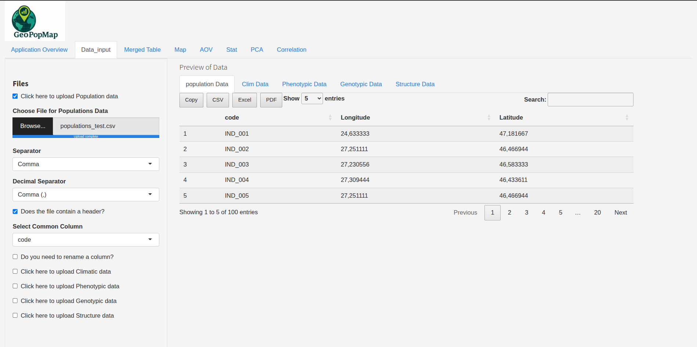
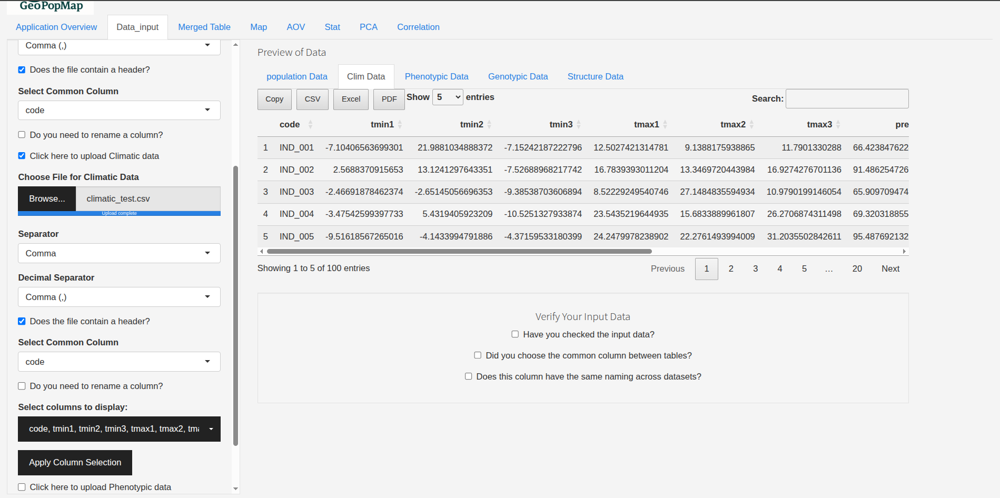
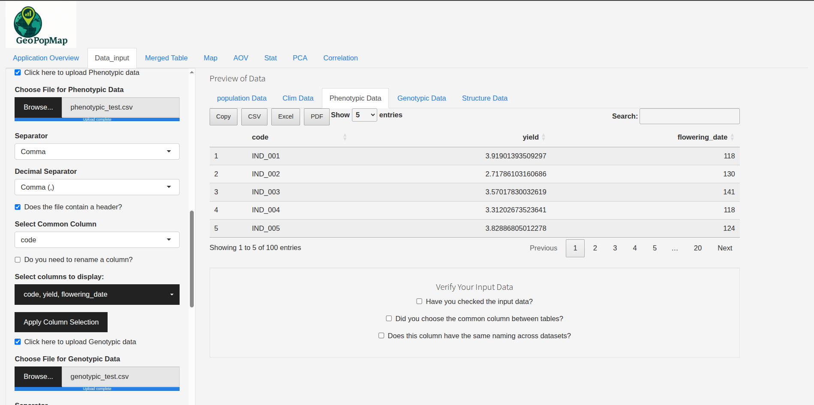
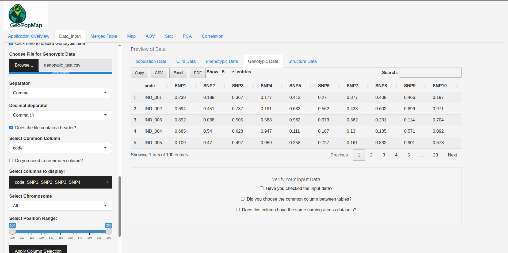
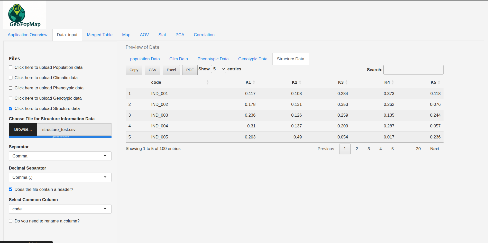
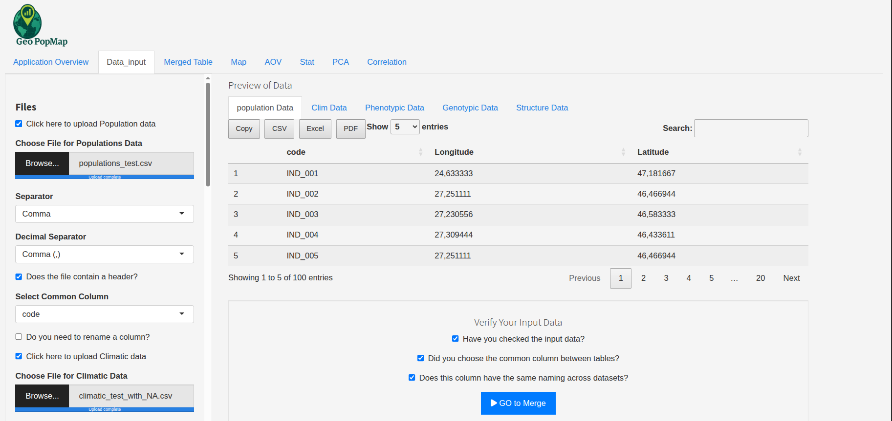
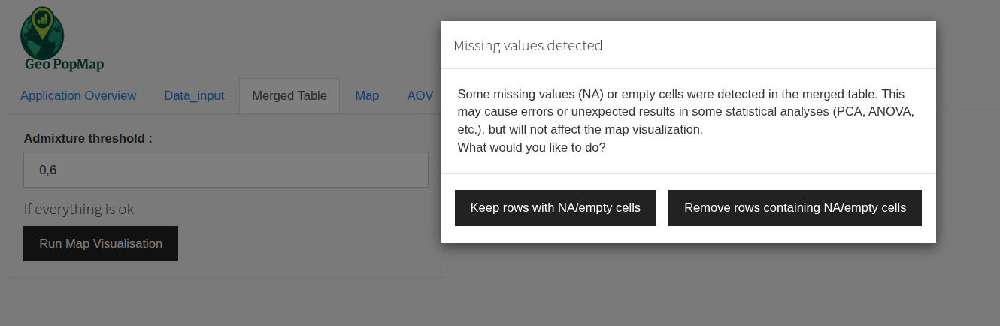
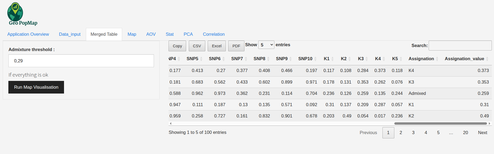
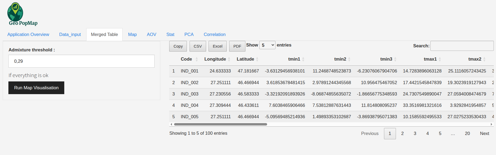

Data Management and Merging¶
GeoPopMap allows you to import, prepare, and merge different types of data (populations, climatic, phenotypic, genotypic, structure) before any analysis or visualization. This step is essential to ensure the consistency of your analyses.
Interface Overview¶
Main view of the data management and merging tab.¶
Advanced Import Options (Common to All Data Types)¶
For each data type, the interface provides:
File selection (supported formats: CSV, TXT, TSV, XLS, XLSX)
Separator selection (comma, semicolon, tab)
Decimal separator (dot or comma)
Header presence (header row)
Common column selection (key for merging)
Column renaming (optional)
Column selection (for Climatic, Phenotypic, Genotypic data)
Notifications in case of error or success
Note
After each import, check the preview to verify the structure and quality of your data.
Details by Data Type¶
1. Populations (GPS)
Standard import, common column selection, optional renaming.
 Populations (GPS) data upload interface.¶
2. Climatic
Standard import + column selection.
Advice: the common column should match the population identifier.
 Climatic data upload interface.¶
3. Phenotypic
Standard import + column selection.
Advice on the common column.
 Phenotypic data upload interface.¶
4. Genotypic
All standard options.
Special chromosome/position mode: automatic detection if the file contains “Chromosomes” and “Position” rows (see example below).
Filtering by chromosome and position range is possible.
Advanced column selection.
 Genotypic data upload interface.¶
Example of special format
Code,geno_01,geno_02,... Chromosomes,chr1,chr1,chr1,... Position,100,200,300,... IND_001,1,1,0,... IND_002,1,1,0,...
Note
If this mode is detected, you can filter by chromosome and position range in the interface.
5. Structure
Standard import, common column selection, optional renaming.
Admissibility threshold adjustable during merging (see below).
 Structure data upload interface.¶
Actions After Import¶
For each imported table:
Check the preview (expected columns, missing values, duplicates)
Rename a column (using the dedicated option)
Select columns to keep (if available)
Notifications for success or error
Merging Data¶
Select the datasets to merge (using checkboxes)
Ensure the common column is identical in all selected datasets
Click “Merge Data” to start merging
 Checkbox merge data after selection.¶
Handling missing values (NA/empty) - If missing values are detected, the app will prompt you to keep or remove the affected rows.
 Choice for handling missing values during merging.¶
Admissibility threshold (structure) - If structure data is present, you can adjust an admissibility threshold to filter assignments.
 Adjusting the admissibility threshold for structure data.¶
Result - The merged table is displayed, ready for analysis and visualization.
 Result of the merging data.¶
Tips and Best Practices¶
Always check the consistency of the common columns between your datasets.
Use the example files in the code/Data_test/ folder to test formats.
If you encounter import errors, check your file’s encoding and separators.
Visual Summary of Options by Data Type¶
Data Type |
Column Selection |
Column Renaming |
Special Mode |
Structure Threshold |
|---|---|---|---|---|
Populations |
No |
Yes |
No |
No |
Climatic |
Yes |
Yes |
No |
No |
Phenotypic |
Yes |
Yes |
No |
No |
Genotypic |
Yes |
Yes |
Chrom/Pos |
No |
Structure |
No |
Yes |
No |
Yes |
Next Steps¶
With your data merged, you are now ready to visualize it. Go to the Map Visualization section.